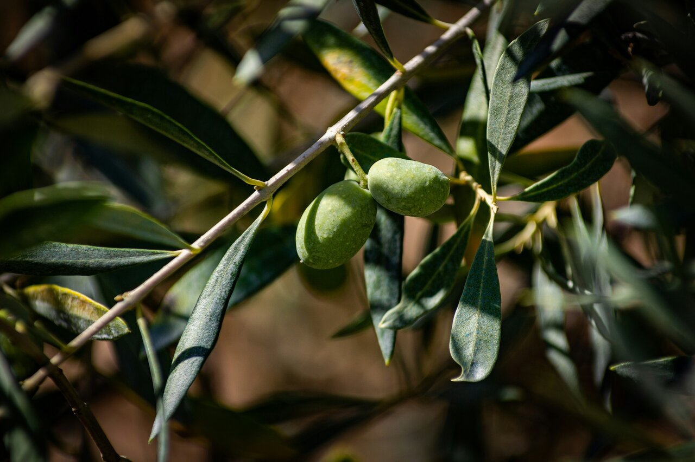

Olive & Lime
Handcrafted mocktails, living plants, and pearls — a graceful blend of freshness and charm, inviting you to savor the sweet, simple things.
Plants, Pearls, & Pleasantries
A reminder to savor the sweet, simple things.
Olive & Lime is traveling mocktail bar and market nook created from a love of simple beauty and small moments shared. At farmers markets, our booth blooms with handcrafted drinks, petite plants, and delicate pearl jewelry — small treasures meant to brighten your day and your space. At special events, we focus solely on our signature herbal and citrus mocktails, poured fresh and designed to refresh body and spirit. We handcraft refreshing, herb- and fruit-inspired mocktails designed to bring brightness and calm wherever we serve them. Each drink blends the grounding warmth of nature with the sparkle of celebration — fresh citrus, soft herbs, and a little creative joy in every pour. Our goal is to make every sip feel like an invitation to slow down, smile, and savor something pure, that everyone can enjoy.